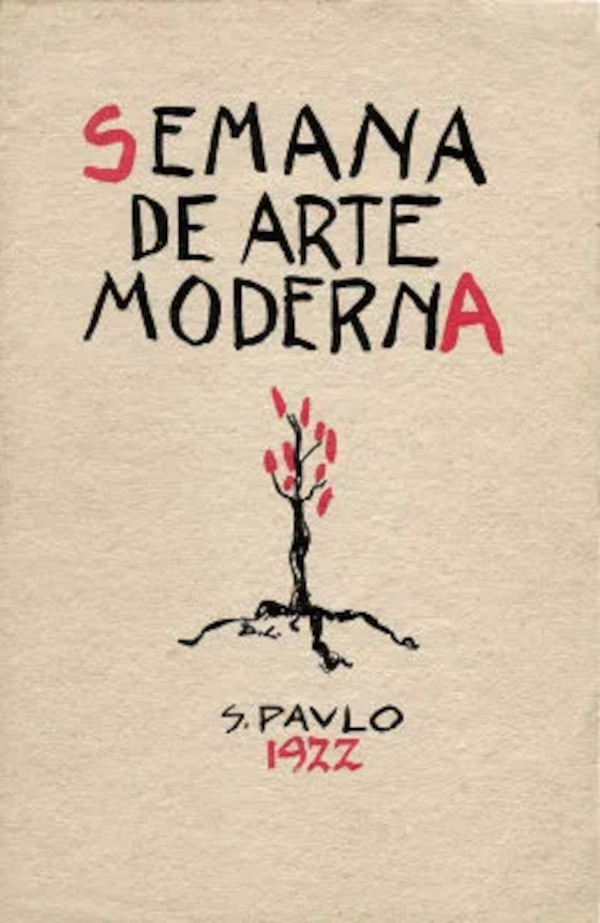
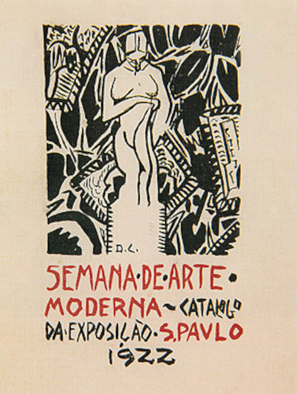
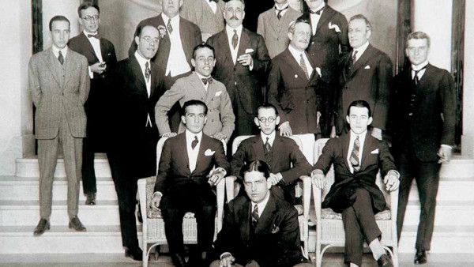

A História da Semana da Arte Moderna
A Semana de Arte Moderna, também conhecida como Semana de 22, foi um evento cultural marcante na história do Brasil, que ocorreu entre os dias 11 e 18 de fevereiro de 1922, na cidade de São Paulo. Foi um marco na renovação artística e cultural do país, introduzindo as vanguardas europeias e promovendo uma ruptura com os padrões estéticos até então predominantes.
Contexto Histórico
No início do século XX, o Brasil vivia um período de transição política e social. A República recém-instaurada enfrentava desafios de modernização, urbanização e industrialização. No campo artístico, prevalecia o academicismo, uma estética conservadora e eurocêntrica que seguia os padrões europeus do século XIX. No cenário mundial, as vanguardas artísticas, como o Cubismo, o Futurismo e o Expressionismo, já estavam em pleno desenvolvimento na Europa, contestando as formas tradicionais de representação e buscando novas maneiras de expressar a realidade e a subjetividade.
A Semana de Arte Moderna
Diante desse contexto, um grupo de intelectuais, artistas e escritores brasileiros decidiu promover uma exposição e uma série de palestras e apresentações para trazer as ideias das vanguardas europeias ao Brasil. O evento foi organizado por Mário de Andrade, Oswald de Andrade, Menotti Del Picchia, entre outros, e contou com o apoio do pintor Di Cavalcanti e da escritora Graça Aranha. A Semana de Arte Moderna foi realizada no Theatro Municipal de São Paulo e foi dividida em três partes principais:
Exposição de Artes Plásticas
Na primeira parte do evento, foram expostas obras de artistas modernistas, incluindo pinturas, esculturas e gravuras. Nessa mostra, os artistas buscaram romper com o academicismo, adotando estilos inovadores e ousados, inspirados nas vanguardas europeias.
Noite de Poesia
A segunda parte foi dedicada à literatura e poesia. Foram realizadas leituras de poemas modernistas que buscavam uma linguagem mais livre, incorporando gírias, coloquialismos e temas cotidianos.
Espetáculo de Música Moderna
A terceira parte foi dedicada à música. Foram apresentadas composições que rompiam com as convenções da música tradicional, trazendo elementos das vanguardas europeias, do jazz e da música popular brasileira.
Impacto e Legado
A Semana de Arte Moderna causou grande polêmica e divisão entre os críticos e a sociedade conservadora da época. Aqueles que apoiaram o movimento reconheceram sua importância e sua capacidade de inaugurar uma nova era na cultura brasileira. Por outro lado, muitos críticos ridicularizaram e rejeitaram o que viram como uma quebra dos padrões tradicionais.
Apesar das controvérsias iniciais, a Semana de Arte Moderna marcou um ponto de virada na cultura brasileira. Os artistas modernistas continuaram a desenvolver suas ideias e influenciaram diversas gerações posteriores. Entre os principais nomes do movimento estão Anita Malfatti, Tarsila do Amaral, Di Cavalcanti, Mário de Andrade e Oswald de Andrade.
O modernismo brasileiro abriu caminho para uma produção cultural mais autêntica, voltada para as questões locais e nacionais. Foi um momento em que o Brasil começou a se reconhecer como um país capaz de produzir arte e cultura original, em vez de simplesmente imitar os padrões europeus. A Semana de Arte Moderna é, portanto, considerada um dos marcos fundadores da cultura brasileira moderna.
